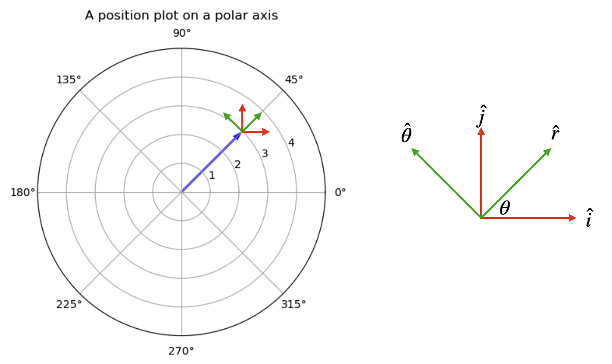

B7.3 Kinematics in Polar Coordinates#
B7.3.1 Motivation#
We saw in previous notes how we can relate linear tangential parameters to rotational parameters for circular motion. However, we also need to know radial parameters to fully describe rotational motion, and for that purpose we need the full treatment using polar coordinates. As an example, anytime we have circular motion, a radial force is required to change the direction of the object, otherwise it just moves in a straight line.
In the following, we will show how the position, velocity, and acceleration vectors appear in polar coordinates.
B7.3.2 Set Up#
Consider the figure below.
The blue vector represents a position vector \(\vec{r}\). The two red vectors are the cartesian unit vectors \(\hat{i}\) and \(\hat{j}\), while the green vectors are the polar unit vectors \(\hat{r}\) and \(\hat{\theta}\). In contrast to the cartesian unit vectors, the polar unit vectors are changing directions depending on the position vector. The radial unit vector \(\hat{r}\) is always pointing in the radial direction away from the origin, and the angular unit vector \(\hat{\theta}\) is always pointing in the counterclockwise angular direction.
The position vector is fully characterized by
This appears simpler than the cartesian version: \(\vec{r} = x\hat{i} + y\hat{j}\), but do not be fooled. Whereas the cartesian unit vectors are constant, the \(\hat{r}\) unit vector is a function of \(\theta\) and it makes it a lot more complex as we will see.
From the sketch on the right, we can write the polar unit vectors in terms of the cartesian unit vectors:
In the following, we will need to know the time derivative of the polar unit vectors:
Time Derivative of \(\hat{r}\)#
We will be using the dot notation for time derivatives.
Applying the sum, product, and chain rules on Equation(2):
Since the cartesian unit vectors are constants, their time-derivative is zero:
Pulling out the common factor of \(\dot{\theta}\):
The term in the parenthesis is the same as \(\hat{\theta}\):
Time Derivative of \(\hat{\theta}\)#
In a similar approach as above, we have
The terms with derivatives of cartesion unit vectors are zero:
Re-arranging:
and using the result from Equation (2):
We are now ready to explore velocity and acceleration in polar coordinates.
B7.3.3 Velocity Vector in Polar Coordinates#
We take the time-derivate of the position vector in Equation (1):
Insert Equation (4):
Discussion#
Radial Term#
The radial term is the one associated with \(\hat{r}\):
This tells us that the radial velocity is the rate of change of the distance away from the origin. This is simply a straight line velocity as on object moves towards/away the origin in a straight line.
Angular Term#
The angular term is the one associated with \(\hat{\theta}\):
We may recognise \(\dot\theta\) is the angular speed \(\omega\) and we can rewrite it as
with a magnitude of
What a hoot: this is what we found as the tangential speed in the previous notes.
Circular Motion#
If we have circular motion, the radial component is zero and we are left with only the tangential velocity:
B7.3.4 Acceleration Vector in Polar Coordinates#
We take the time-derivate of the velocity vector in Equation (6) using the sum and product rules:
Insert Equations (4) and (5):
Re-arranging the terms:
Discussion#
Radial Terms#
The radial terms are the ones associated with \(\hat{r}\):
We have two terms:
Linear Acceleration
The term
is the linear acceleration as it describes the straigh line acceleration towards/away from the origin. For example, an object speeding up or slowing down as it moves towards/away in a straight line.
Centripetal Acceleration
The second radial term is
and is known as the centripetal acceleration. Although in the radial direction, it does not change the radial speed of the object but causes it to change direction. This acceleration plays a major role in circular motion as we will see below. For now, it will be convenient to express it in different forms.
We can write \(\dot{\theta}\) as \(\omega\) and the magnitude of the centripetal acceleration is then
and the centripetal acceleration becomes:
Angular Term#
The angular terms are the ones associated with \(\hat{\theta}\):
Tangential Acceleration
The last term is the tangential acceleration:
as it is the term responsible for an object to rotate faster or slower. Using \(\ddot{\theta} = \alpha\) we have the magnitude as
and recognize it as the tangential acceleration from previous notes.
Coriolis Acceleration
This term is known as the Coriolis acceleration and is the most complex of all the terms as it involves changes in both radial and angular velocity:
B7.3.5 Special Case: Uniform Circular Motion#
A very important case is uniform circular motion, that is, motion in a circular path with a constant speed.
In this case we have
and the acceleration in polar coordinates reduces to
which is simply the centripetal acceleration. It is always directed towards the origin or the center of the circular motion: it is a center-seeking acceleration.
It is more convenient to use it in the following form (magnitude):